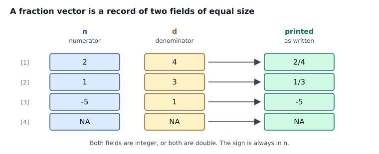
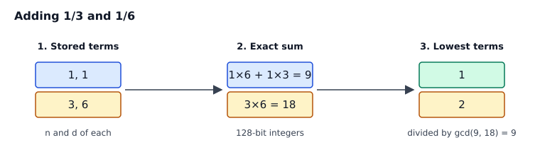
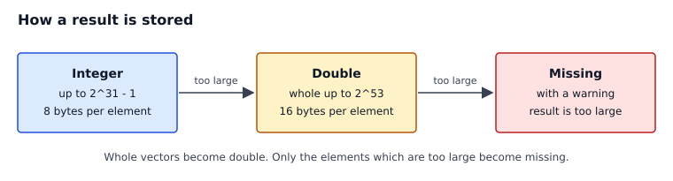

The problem
Most fractions can’t be stored exactly as a number, so arithmetic with them is approximate.
1 / 10 + 2 / 10 == 3 / 10
#> [1] FALSE
fraction(1, 10) + fraction(2, 10) == fraction(3, 10)
#> [1] TRUEA number also forgets how it was written: 3 out of 10 and 30 out of
100 are both 0.3. The rhind package stores the numerator
n and denominator d separately, which keeps
both the exact value and the terms it was written in.
Data structure
A fraction is a vctrs record with two fields. It works
like any other vector, including in data frames.

x <- fraction(c(2, 1, -5, NA), c(4, 3, 1, 1))
x
#> <fraction<double>[4]>
#> [1] 2/4 1/3 -5 NA
numerator(x)
#> [1] 2 1 -5 NA
denominator(x)
#> [1] 4 3 1 NAA denominator of zero is allowed: 1/0, -1/0
and 0/0 behave as Inf, -Inf and
NaN.
Converting
as_fraction() reads text, and approximates numbers which
aren’t whole.
as_fraction(c("2/4", "3", "1 3/4"))
#> <fraction<integer>[3]>
#> [1] 2/4 3 7/4
as_fraction(c(0.1, 0.75, 1 / 3))
#> <fraction<double>[3]>
#> [1] 1/10 3/4 1/3
as_fraction(pi, max_d = 1000)
#> <fraction<double>[1]>
#> [1] 355/113
as.double(fraction(1, 3))
#> [1] 0.3333333Arithmetic
Fractions are kept as written, but results are in lowest terms.
simplify() reduces a fraction without calculating
anything.

fraction(1, 3) + fraction(1, 6)
#> <fraction<double>[1]>
#> [1] 1/2
fraction(2, 3)^-2
#> <fraction<double>[1]>
#> [1] 9/4
simplify(fraction(2, 4))
#> <fraction<double>[1]>
#> [1] 1/2
sum(fraction(1, 1:10))
#> <fraction<double>[1]>
#> [1] 7381/2520
mean(fraction(1:3, 4))
#> <fraction<double>[1]>
#> [1] 1/2
round(fraction(2, 3), 2)
#> <fraction<double>[1]>
#> [1] 67/100Functions with results that usually aren’t fractions, such as
sqrt() and exp(), give doubles.
Plain numbers
Whole numbers are fractions. If any element of a plain number isn’t
whole, the result is a double, as it is when adding an integer to a
double. Convert with as_fraction() first to remain
exact.
fraction(1, 3) + 1
#> <fraction<double>[1]>
#> [1] 4/3
fraction(1, 3) + 0.5
#> [1] 0.8333333
fraction(1, 3) + as_fraction(0.5)
#> <fraction<double>[1]>
#> [1] 5/6The type made by combining vectors can’t depend on their values, so
combining with any double gives doubles. Use integers (such as
1L) or as_fraction() to combine as
fractions.
Comparison
Comparisons use the exact value, regardless of the terms. So do sorting, matching and grouping.
Storage
The fields are integers if both inputs are integers, and otherwise
doubles. Note that 1 is a double and 1L is an
integer. Integers become doubles when a result doesn’t fit, and results
too large for doubles are missing.

x <- fraction(.Machine$integer.max, 2L)
x
#> <fraction<integer>[1]>
#> [1] 2147483647/2
x * 3L
#> <fraction<double>[1]>
#> [1] 6442450941/2
fraction(1, 2^53) / 3
#> Warning: NAs produced by fractions too large to store exactly
#> <fraction<double>[1]>
#> [1] NADenominators grow quickly when adding fractions with many different
denominators. Use as.double() for approximate results of
any size.